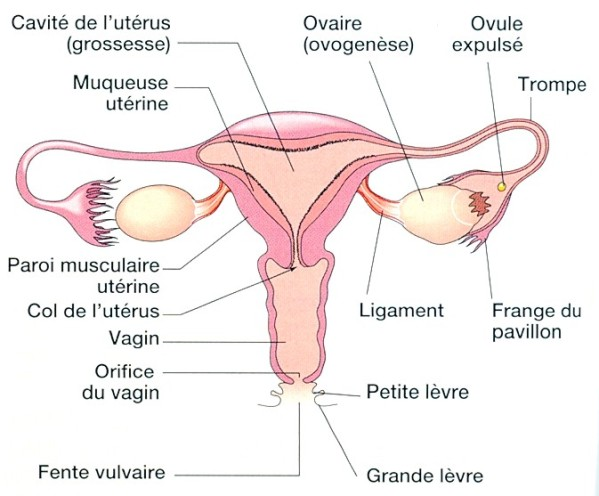

Le polype de l'endometre
Definitions
Le polype de l'endometre
Le polype de l'endometre est une tumefaction de volume variable qui provient d'une hyperplasie localisee de la muqueuse, favorisee par une hyperoestrogenie.
L'endometre
L'endometre est la muqueuse qui tapisse interieurement le muscle uterin ou myometre.

Diagnostic
Voir aussi :